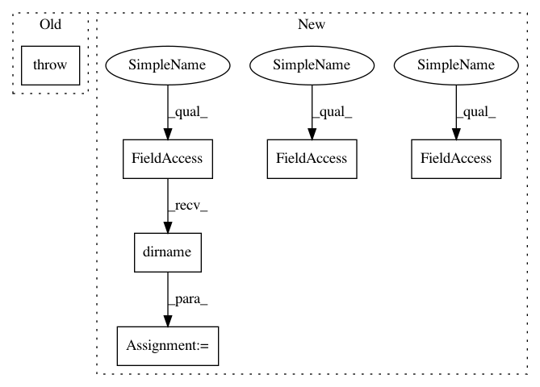

76835dc05631f148be28068b3675bc60c9797325,src/python/pants/base/build_file.py,BuildFile,__init__,#BuildFile#Any#Any#Any#,36
Before Change
raise IOError("%s is not a BUILD file" % buildfile)
if not os.path.exists(buildfile):
raise IOError("BUILD file does not exist at: %s" % buildfile)
self.root_dir = os.path.realpath(root_dir)
self.full_path = os.path.realpath(buildfile)
After Change
if must_exist:
if not os.path.exists(os.path.dirname(buildfile)):
raise IOError("Path to BUILD file does not exist at: %s" % os.path.dirname(buildfile))
// There is no BUILD file without a prefix so select any viable sibling
if not os.path.exists(buildfile):
for build in BuildFile._get_all_build_files(os.path.dirname(buildfile)):
self._build_basename = build
buildfile = os.path.join(path, self._build_basename)
break
if must_exist:
if not os.path.exists(buildfile):
raise IOError("BUILD file does not exist at: %s" % buildfile)
In pattern: SUPERPATTERN
Frequency: 3
Non-data size: 6
Instances
Project Name: pantsbuild/pants
Commit Name: 76835dc05631f148be28068b3675bc60c9797325
Time: 2014-05-21
Author: zundel@squareup.com
File Name: src/python/pants/base/build_file.py
Class Name: BuildFile
Method Name: __init__
Project Name: pantsbuild/pants
Commit Name: 76835dc05631f148be28068b3675bc60c9797325
Time: 2014-05-21
Author: zundel@squareup.com
File Name: src/python/pants/base/build_file.py
Class Name: BuildFile
Method Name: __init__
Project Name: openml/openml-python
Commit Name: a98ad8afec08c9d6172cc1d705467985f3e9dd36
Time: 2015-03-02
Author: feurerm@informatik.uni-freiburg.de
File Name: tests/test_apiconnector.py
Class Name: TestAPIConnector
Method Name: test_get_cached_dataset
Project Name: openml/openml-python
Commit Name: a98ad8afec08c9d6172cc1d705467985f3e9dd36
Time: 2015-03-02
Author: feurerm@informatik.uni-freiburg.de
File Name: tests/test_apiconnector.py
Class Name: TestAPIConnector
Method Name: test_get_cached_datasets